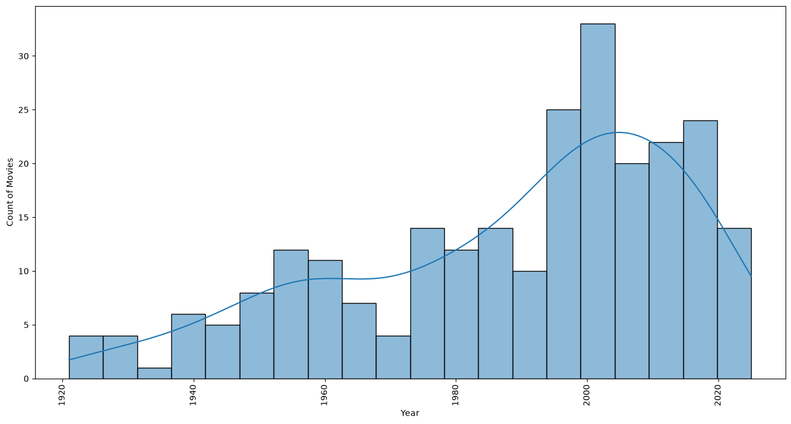
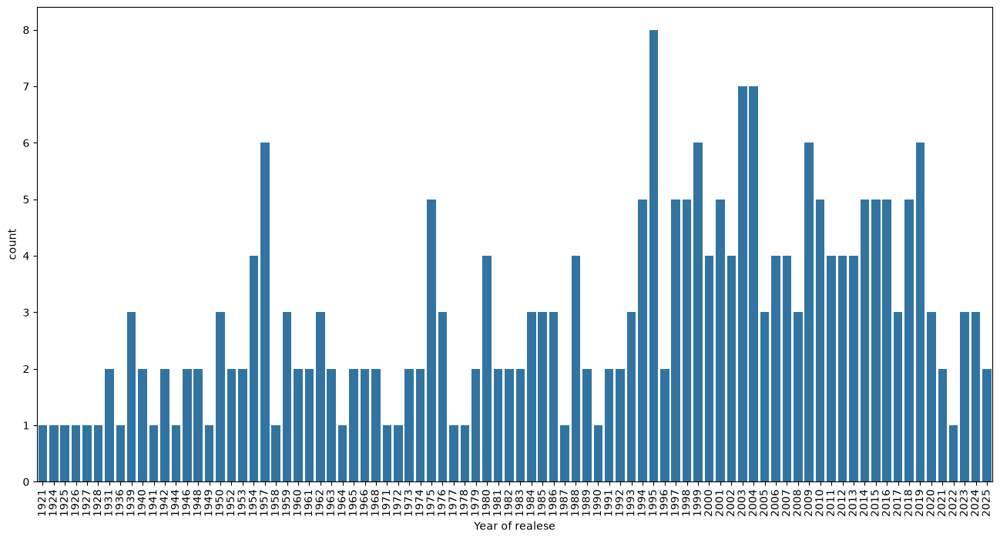
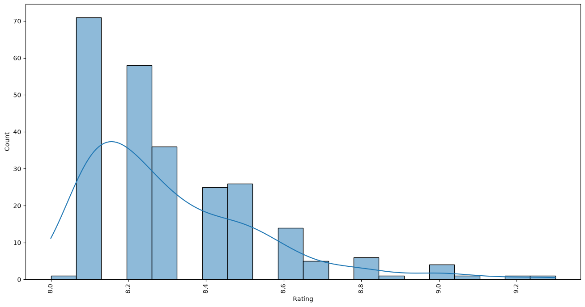

ANALYSIS 01
How are movies distributed by release year?
The release-year distribution is left-skewed, with a larger representation of movies released after 2000 compared with movies from the early 20th century.

DATA ANALYSIS • PYTHON • POWER BI
An exploratory data analysis project focused on understanding movie ratings, popularity, release years and duration across IMDb's Top 250 movies.
01 — PROJECT OVERVIEW
The IMDb Top 250 movie list was collected through web scraping and transformed into a structured dataset for analysis.
Python was used for data scraping, cleaning and exploratory data analysis, while Power BI was used to create interactive visualizations and explore patterns within the dataset.
The analysis focuses on IMDb ratings, vote counts, movie duration and release years to understand characteristics of highly rated movies.
02 — DATASET OVERVIEW
Total Movies
Average IMDb Rating
Median IMDb Rating
Average Duration (minutes)
Longest Movie (minutes)
Shortest Movie (minutes)
Movies Rated Above 8.5
Highest IMDb Rating
03 — DATA WORKFLOW
04 — ANALYSIS
ANALYSIS 01
The release-year distribution is left-skewed, with a larger representation of movies released after 2000 compared with movies from the early 20th century.

ANALYSIS 02
1995 has the highest representation in the dataset, with 8 movies appearing in the IMDb Top 250.

ANALYSIS 03
The analysis examines how IMDb ratings are distributed across the 250 movies. Around 59 movies have ratings above 8.5.

ANALYSIS 04
The Shawshank Redemption has the highest rating in this dataset, with an IMDb rating of 9.3.
ANALYSIS 05
Movie duration has a weak positive linear relationship with IMDb rating. No noticable peak and lows identify
ANALYSIS 06
Vote count shows a moderate positive linear association with IMDb rating.

ANALYSIS 07
Based on the analysis, the 1990–2000 period has the highest average rating among the analyzed decades.

ANALYSIS 08
The analysis show a clear or consistent long-term trend in movie duration.

ANALYSIS 09
Older movies remain represented in the Top 250. However, differences in historical access to movies and voting behavior mean this comparison should be interpreted cautiously.
ANALYSIS 10
The scatter plot indicates a positive association between vote count and IMDb rating. Further analysis by decade could be used to quantify how the relationship changes over time.
05 — KEY TAKEAWAYS
06 — POWER BI
Your dashboard screenshot or Power BI embed will be placed here.
07 — CONCLUSION
This project demonstrates an end-to-end analytical workflow, beginning with web scraping and data collection and progressing through data cleaning, exploratory analysis and visualization.
The analysis found a moderate positive association between vote count and IMDb rating, while movie duration showed only a weak positive relationship with rating.
The project helped demonstrate how Python and Power BI can be combined to transform raw web data into structured analysis and visually communicate meaningful findings.